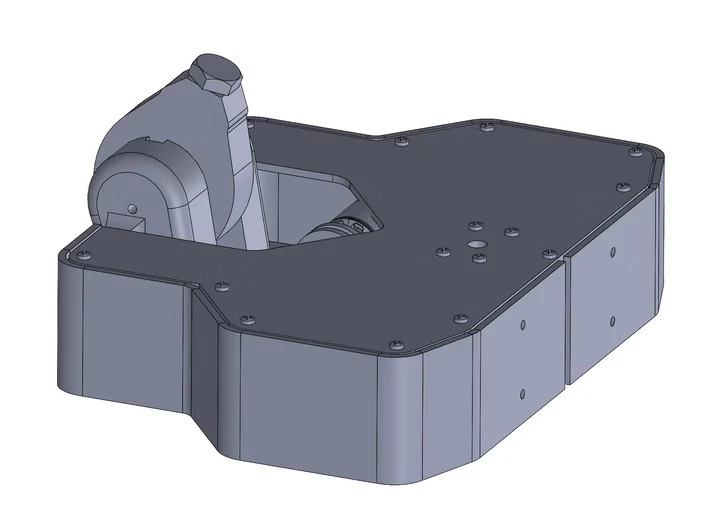
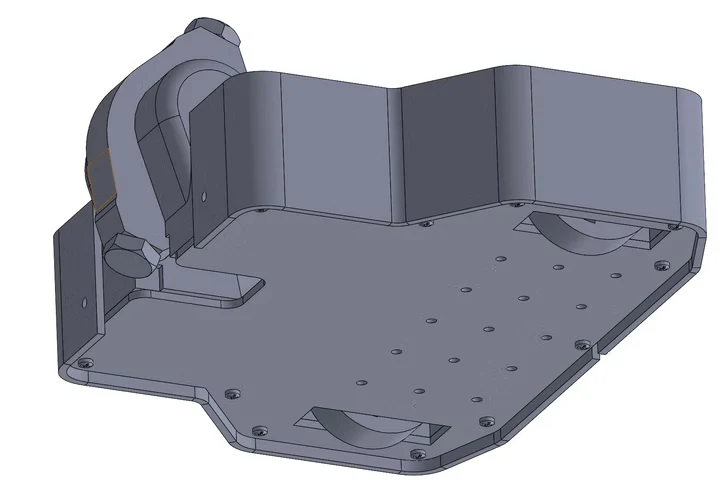

Competition brief
I designed and built the $100 Combat Robot for Texas Roborumble at The University of Texas at Austin. The competition’s 3-pound limit gave the chassis, drive system, and vertical spinner a shared weight budget. My goal was to build a compact robot that could maneuver in the arena, withstand repeated impacts, and deliver effective hits.
Chassis and fabrication
I used Onshape to model the chassis and check how the drive wheels, top plate, and spinner fit together. The chassis keeps the wheels inside the robot’s footprint and leaves an opening at the front for the spinner. The two CAD views show how those components fit around the chassis.




I 3D-printed the chassis in thermoplastic polyurethane (TPU) at 80% infill. TPU gave the chassis enough flexibility to deform under impact, and the infill provided internal support while using less material than a solid print.
Drive and spinner
Two powered wheels propelled and steered the robot. The front-mounted vertical spinner had a hex bolt at each end, adding mass to the rotating assembly. I also observed that vibration from the spinner sometimes helped the robot move in the arena.
Competition result
The robot finished Texas Roborumble with a 3–2–0 record across five matches. The event gave me a chance to see how the printed chassis, two-wheel drive, and spinner behaved together under match conditions.